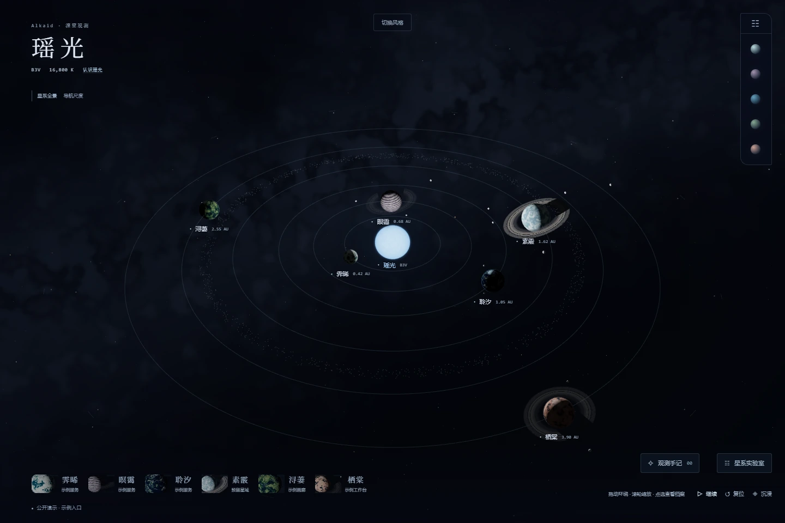
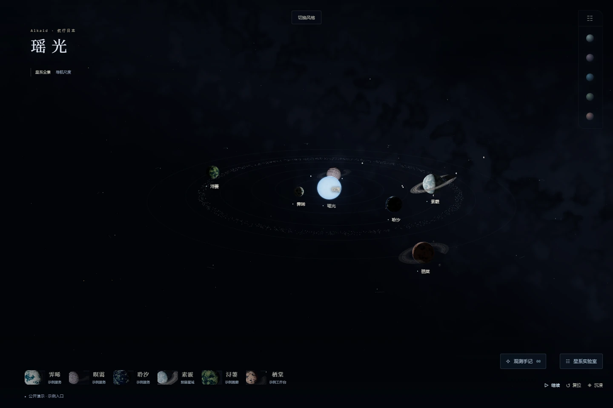
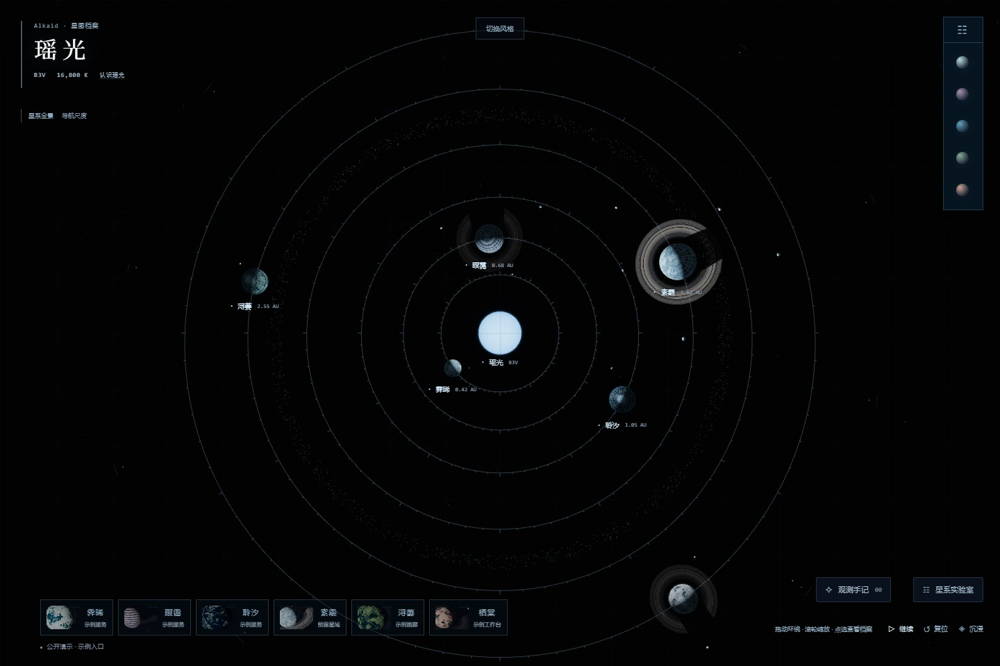
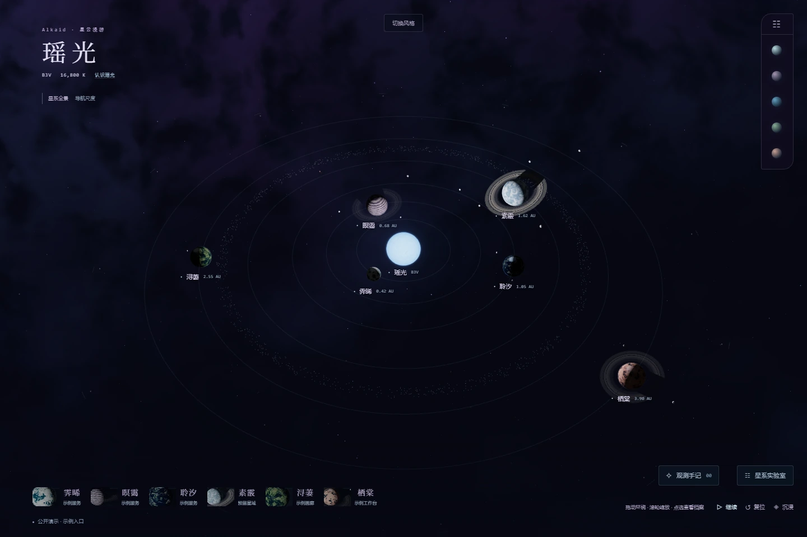

瑶光观测台修订版
进入 3D 预览 ↗安静的深空观测界面。小型项目栏、按需说明卡、原创地貌与淡银河，让星系回到画面中心。
六颗行星，同一片星空。
观测台修订版与三种视觉探索。下方是实际 3D 页面截图，可切换同一场景比较；进入预览后可以环绕、靠近行星和选择功能卫星。
当前对比：星系全景

安静的深空观测界面。小型项目栏、按需说明卡、原创地貌与淡银河，让星系回到画面中心。

更低的航行视角，更深的夜面与更少的界面。接近天体时，光照和尺度成为主要叙事。

以测绘的眼光阅读星系。俯视构图、轨道刻度、球面经纬网与蓝灰材质，像翻开一册深空档案。

更浓郁的蓝紫色尘云与柔光。保持可辨认的天体结构，让背景带来更有想象力的宇宙氛围。